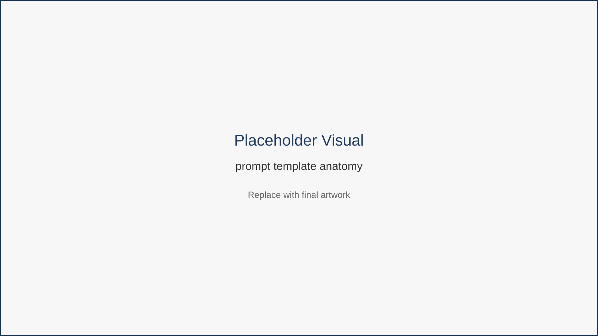
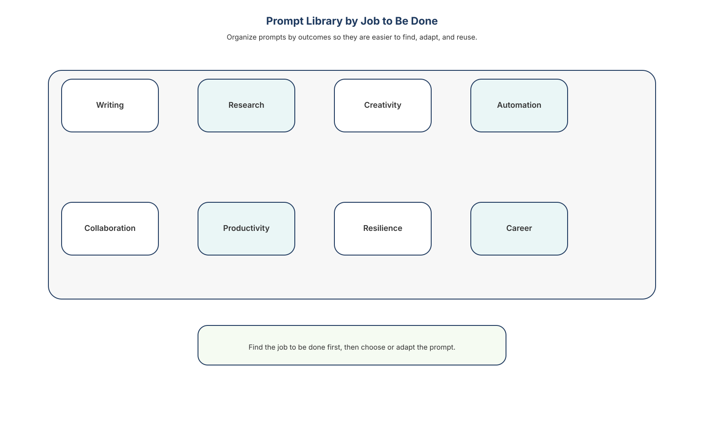

Prompt Toolkit
AI tools become dramatically more useful when you treat them as thinking partners rather than simple question-answer machines.
The prompts in this chapter provide practical starting points you can adapt to your own work.
They are organized by job to be done, not by specific software tools. Each prompt can be used with most modern AI assistants.
The key to reliable results is using a consistent prompt structure.
Understanding Effective Prompt Structure
Effective prompts usually include five elements:
- Role — the perspective the AI should adopt
- Task — the specific job to perform
- Context — background information or inputs
- Constraints — tone, limitations, or rules
- Output Format — how the response should be structured
When these elements are included, AI systems are far more likely to produce useful and consistent results.

This framework breaks prompts into reusable components that make results more predictable and easier to refine.
Prompt Library by Job to Be Done
Prompts become easier to reuse when organized around professional tasks.

These prompts are grouped into categories such as writing, research, creativity, automation, collaboration, and personal productivity.
Writing and Communication
Email Draft
Role: Professional communications assistant
Task: Draft a polite but firm payment reminder email.
Context
A client payment is overdue by [number] days for [project or invoice name].
Constraints
- Maintain a professional tone
- Avoid sounding aggressive
- Clearly explain next steps
Output Format
Write a concise email including:
- acknowledgement of previous work
- reminder of the outstanding payment
- next steps or deadline
Proposal Improvement
Role: Business proposal editor
Task: Improve the persuasiveness of the following proposal.
Context
Paste proposal text:
[proposal text]
Constraints
- Emphasize outcomes
- Highlight measurable value
- Maintain professional tone
Output Format
Provide:
- revised proposal
- short list of improvements made
Rewrite for Clarity
Role: Professional editor
Task: Rewrite the following message for clarity.
Context
[text]
Constraints
- preserve original meaning
- simplify sentences
- remove unnecessary wording
Output Format
Provide:
- rewritten message
- short explanation of improvements
Meeting Summary
Role: Meeting analyst
Task: Summarize a meeting transcript.
Context
[transcript]
Constraints
Focus on decisions and actions.
Output Format
Provide:
- key decisions
- action items
- open questions
Executive Summary
Role: Business analyst
Task: Create an executive summary.
Context
[text]
Constraints
Focus on major insights only.
Output Format
Provide 5–7 bullet points covering:
- key findings
- implications
- recommended actions
Research and Learning
Quick Trend Overview
Role: Industry research analyst
Task: Identify key trends.
Context
Industry: [industry]
Constraints
Focus on the past 12 months.
Output Format
Provide:
- five major trends
- explanation of each
- why it matters
Tool Comparison
Role: Technology advisor
Task: Compare two tools.
Context
- Tool A: [name]
- Tool B: [name]
Use case: remote collaboration
Output Format
Return a comparison table covering:
- strengths
- weaknesses
- ideal use cases
- typical user
Learning Plan
Role: Professional development coach
Task: Create a learning plan.
Context
Skill: [skill]
Time available: 30 days
Constraints
Assume beginner level.
Output Format
Provide a 4-week learning plan including:
- weekly focus
- daily activities
- recommended resources
Concept Simplification
Role: Technical educator
Task: Explain a complex concept simply.
Context
Concept: [topic]
Audience: non-technical professional
Constraints
Avoid jargon.
Output Format
Provide:
- simple explanation
- one analogy
- one practical example
Creativity and Branding
Social Media Ideas
Role: Content strategist
Task: Generate LinkedIn post ideas.
Context
Audience: [profession or industry]
Constraints
Ideas should be educational and practical.
Output Format
Provide five ideas including:
- headline
- topic description
- suggested call-to-action
Blog Outline
Role: Content editor
Task: Create a blog outline.
Context
Topic: [topic]
Output Format
Provide:
- title
- section headings
- bullet points under each section
Brand Voice Guide
Role: Brand strategist
Task: Define a brand voice.
Context
Business: freelance consultant
Audience: remote professionals
Output Format
Provide:
- brand voice description
- tone guidelines
- example phrases
Visual Concept Prompt
Role: Creative director
Task: Generate a logo concept.
Context
Brand: remote productivity consulting
Constraints
Minimalist design.
Output Format
Provide:
- logo concept
- color palette
- typography suggestion
- symbolic elements
Automation and Workflows
Workflow Design
Role: Workflow consultant
Task: Design a workflow.
Context
Tools:
- Gmail
- Google Drive
- Trello
Goal: manage client projects.
Output Format
Provide step-by-step workflow including:
- triggers
- actions
- tools used
Automation Ideas
Role: Productivity automation specialist
Task: Suggest useful automations.
Context
User: remote freelancer
Tools used: [list]
Output Format
Provide three automation ideas including:
- workflow
- tools required
- time savings
Process Optimization
Role: Process improvement advisor
Task: Improve a workflow.
Context
[workflow description]
Output Format
Provide:
- problems identified
- suggested improvements
- revised workflow
Personal Productivity
Task Prioritization
Role: Productivity coach
Task: Prioritize tasks.
Context
[paste tasks]
Constraint
Use the Eisenhower Matrix.
Output Format
Organize tasks into:
- urgent and important
- important but not urgent
- urgent but not important
- neither
Daily Planning
Role: Time-management assistant
Task: Convert tasks into a daily schedule.
Context
Work hours: [hours]
Task list: [tasks]
Output Format
Provide a structured daily schedule.
Weekly Review
Role: Productivity analyst
Task: Conduct a weekly review.
Context
Completed tasks: [list]
Upcoming commitments: [list]
Output Format
Provide:
- summary of accomplishments
- lessons learned
- priorities for next week
Prompt Debugging Guide
Even a strong prompt will not always produce the exact result you want on the first try.
That does not mean AI is useless.
It usually means the prompt needs adjustment.
Prompting works best as an iterative process. You give instructions, review the output, identify what is missing, and refine the request.
The good news is that most weak outputs can be improved quickly once you know what to look for.
Common Prompt Problems
1. The response is too vague
This usually means the task is too broad or the output format is unclear.
Weak prompt:
Help me with my proposal.
Better follow-up:
Act as a business proposal editor. Rewrite the proposal to sound more persuasive for a small business client. Focus on outcomes, cost savings, and clear next steps. Return the result as a revised proposal followed by three suggested improvements.
Fix:
Add a clearer task, more context, and a defined output format.
2. The tone is wrong
AI often defaults to a generic style unless you specify tone.
Weak prompt:
Write an email to a client.
Better follow-up:
Act as a professional communications assistant. Draft a short email to a client requesting overdue payment. Keep the tone polite, firm, and professional. Avoid sounding aggressive or emotional.
Fix:
Add tone constraints such as professional, concise, warm, direct, persuasive, or calm.
3. The answer is too long or too short
Length problems are often caused by missing constraints.
Weak prompt:
Summarize this report.
Better follow-up:
Summarize this report for a busy executive. Use five bullet points and keep each bullet to one sentence.
Fix:
Specify the desired length and structure.
4. The output is generic
Generic output often means the prompt lacks context.
Weak prompt:
Give me ideas for LinkedIn posts.
Better follow-up:
Act as a content strategist. Generate five LinkedIn post ideas for a freelance designer who helps remote teams improve brand consistency. The audience is startup founders and marketing leads. Keep the ideas practical and professional.
Fix:
Add audience, purpose, use case, and background.
5. The result ignores important details
This usually means critical constraints were not stated clearly enough.
Weak prompt:
Rewrite this message.
Better follow-up:
Rewrite this message for clarity while preserving the original meaning, deadline, and next steps. Do not remove any factual details.
Fix:
Explicitly state what must be preserved.
6. The answer sounds confident but may be wrong
AI can produce plausible language even when accuracy is uncertain.
Better follow-up:
Summarize the main points, but clearly label anything uncertain. Do not invent facts. If information is missing, say so.
For research tasks, you can also ask:
Separate confirmed information from assumptions and open questions.
Fix:
Ask the AI to identify uncertainty, avoid guessing, and distinguish facts from interpretation.
7. The structure is hard to use
Sometimes the information is good, but the format is messy.
Weak prompt:
Review these meeting notes.
Better follow-up:
Review these meeting notes and return the result in three sections: key decisions, action items, and open questions. Use bullet points.
Fix:
Specify headings, bullets, tables, or numbered steps.
A Simple Prompt Debugging Checklist
When a response is weak, ask:
- Did I define the role clearly?
- Did I describe the task specifically?
- Did I provide enough context?
- Did I include useful constraints?
- Did I request the right output format?
If one of these is missing, that is usually the problem.
A Fast Repair Pattern
When a result is weak, revise the prompt using this pattern:
Act as [role].
Help me [task].
Here is the context: [background or source material].
Keep these constraints in mind: [tone, length, must-keep details, limitations].
Return the result as: [format].
Example:
Act as a professional editor. Rewrite the following client update so it sounds clear, confident, and concise. Preserve the original meaning and next steps. Return the result as a polished email followed by two brief notes explaining what you improved.
Use Follow-Up Prompts Instead of Starting Over
You do not always need to rewrite the entire prompt.
Often, a short follow-up works:
- Make this shorter and more direct.
- Rewrite this for a non-technical audience.
- Turn this into bullet points.
- Keep the tone warm but more professional.
- Preserve the meaning, but simplify the wording.
- Add a clearer call to action.
- Separate facts from assumptions.
- Give me three stronger alternatives.
This is one of the most practical ways to work with AI effectively.
The Prompt Improvement Loop
Effective prompting rarely happens in a single attempt.
Instead, it works best as a short iterative cycle where you refine instructions based on the response you receive.
Think of prompting as a collaboration process rather than a one-time command.
A simple improvement loop looks like this:
-
Start with a clear prompt
Define the role, task, context, constraints, and desired output format. -
Review the AI response critically
Ask yourself: - Is the answer accurate?
- Is the tone appropriate?
- Is the structure useful?
-
Is anything missing?
-
Identify the specific problem
Common issues include: - vague results
- missing details
- incorrect tone
-
too much or too little information
-
Refine the prompt with clearer instructions
Adjust the prompt by adding: - more context
- stronger constraints
-
clearer formatting requirements
-
Repeat until the result is useful
Most improvements happen within one or two follow-up prompts.
Example: Improving a Prompt
Initial Prompt
Summarize this report.
Result: vague summary with missing insights.
Improved Prompt
Act as a business analyst.
Summarize the following report for a senior executive.
Focus on key findings, risks, and recommended actions.
Return the result as five concise bullet points.
Result: clearer, structured summary.
Practical Tip
You do not always need to rewrite the entire prompt.
Often a short follow-up works:
- “Make this more concise.”
- “Rewrite this for a non-technical audience.”
- “Turn this into bullet points.”
- “Highlight the three most important insights.”
- “Keep the meaning but simplify the language.”
Small adjustments often produce dramatically better results.
Key Insight
Prompting is not about finding perfect words.
It is about giving clear instructions, evaluating the response, and refining the collaboration between human judgment and AI assistance.
Chapter Takeaways
- Prompt design is a professional skill.
- Clear structure produces better results.
- Context and constraints improve reliability.
- Iteration improves outputs.
- Building a prompt library saves time.
What’s Next
Prompts determine how effectively you communicate with AI.
But prompts are only part of the system.
The tools you choose also shape how smoothly your workflows operate.
The final chapter provides a curated directory of AI tools organized by common workflow categories, helping you select practical tools that support the systems you have built throughout this book.